Prva znana oblika kriptografije - uporaba nestandardnih hieroglifov, vklesanih v stene egipčanskih grobnic.

Kriptografija je skozi zgodovino igrala ključno vlogo pri varovanju skrivnosti, zaščiti komunikacije in razvoju tehnologije. Od preprostih simbolov v starodavnih civilizacijah do kompleksnih šifrirnih algoritmov današnjega časa. Na tej strani boste spoznali, kako se je kriptografija razvijala skozi stoletja in kdo so bili glavni akterji pri njenem oblikovanju. (Schneider, 2024)
Prva znana oblika kriptografije - uporaba nestandardnih hieroglifov, vklesanih v stene egipčanskih grobnic.
Glinene tablice z napisom skrivnih receptov za glazure - zgodnja zaščita skrivnosti v Mezopotamiji
Španska skitala - usnjen trak ovit okoli palice za branje skritega vojaškega sporočila.
Cezarjeva šifra - preprosta substitucijska šifra, kjer je vsaka črka v besedilu nadomeščena s črko, ki je določeno število mest naprej po abecedi.
Leon Alberti uvede večabecedno šifro - korak k varnejšemu šifriranju.
Vigenèrova šifra - kompleksna metoda, ki uporablja več abeced hkrati. Dolgo časa veljala za nerazvozljivo.
Stroj Enigma - nemški šifrirni stroj, ključen za vojaško komunikacijo v 2. svetovni vojni.
Alan Turing razvije stroj za razbitje Enigme - velik preboj v kriptografije in začetek sodobnega računalništva.
DES postane prvi standard za šifriranje podatkov - kasneje nadomeščen zaradi varnostnih pomanjkljivosti.
Diffie-Hellman protokol - omogoča varen prenos šifrirnih ključev brez predhodnega dogovora.
RSA - prvi praktičen sistem z javnim ključem, temelji na matematični kompleksnosti.
AES - nov standard šifriranja, varnejši in učinkovitejši od zastarelega DES.
Kvantna kriptografija - razvoj sistemov, odpornih na napade kvantnih računalnikov.
(Schneider, 2024)